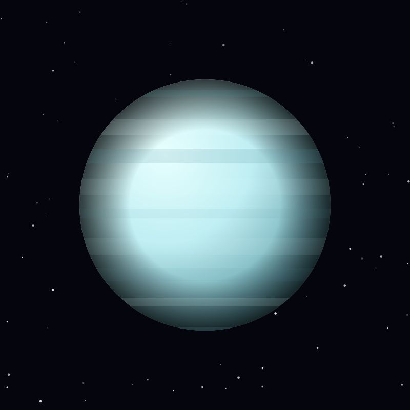

Planet
Uranus
An ice giant tipped onto its side, rolling around the Sun with a 98-degree tilt that gives it seasons lasting 21 years each.
Object 13 of 26

Key facts
- Distance from Earth
- 2.87 billion km
- Radius
- 25,362 km
- Mass
- 8.68 × 10²⁵ kg
- Surface gravity
- 8.69 m/s²
- Orbital period
- 84 years
- Axial tilt
- 97.8°
- Atmosphere
- Hydrogen, helium, methane
- Known moons
- 28
Overview
Uranus is the seventh planet from the Sun and the first discovered with a telescope. William Herschel spotted it on 13 March 1781, doubling the known size of the solar system overnight. It is an ice giant: rather than a layer of gas around rock, most of its mass is a hot, dense fluid of water, ammonia and methane.
The planet appears a flat, featureless cyan because methane in its atmosphere absorbs red light. Beneath the calm exterior, models suggest temperatures reach thousands of degrees near a small rocky core.
Extreme Seasons
Uranus is tipped on its side with an axial tilt of 97.8 degrees, so it orbits the Sun rolling rather than spinning upright. Each pole spends 42 years in continuous sunlight, then 42 years in darkness.
The cause is still debated; the leading explanation is a collision with an Earth-sized body early in the solar system's history. Because sunlight is weak at 19 astronomical units, the seasons are gentler than the geometry suggests, though the poles are surprisingly warmer than the equator at high altitudes.
Rings & Moons
Thirteen faint, dark rings circle the planet, discovered in 1977 when Uranus passed in front of a star and the rings blinked the starlight. Two more were found by the Hubble Space Telescope in 2005-2006.
Its 28 known moons are named after characters from Shakespeare and Alexander Pope rather than classical figures — Miranda, Ariel, Umbriel, Titania and Oberon are the five largest. Miranda, the innermost big moon, has one of the strangest surfaces known: a jumbled patchwork of huge canyons and ice terraces.
Exploration
Voyager 2 made the only close visit, flying past Uranus on 24 January 1986. It found ten new moons, refined the ring count and measured the planet's bizarre magnetic field, which is offset from the centre and tilted 59 degrees from the rotation axis.
The 2022 US Planetary Science Decadal Survey ranked a Uranus Orbiter and Probe as the highest-priority new mission for the region, calling it the best way to understand how ice giants form and why they differ from Jupiter and Saturn.